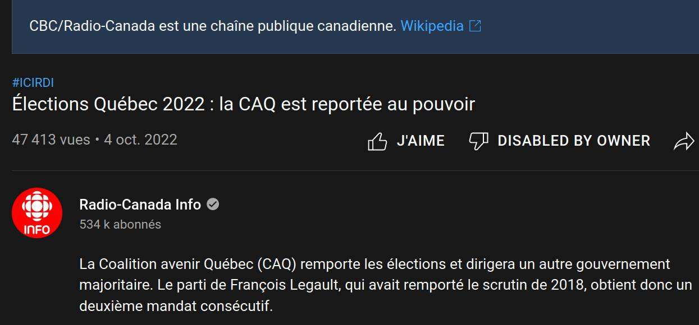
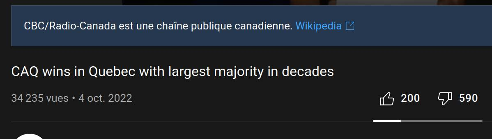
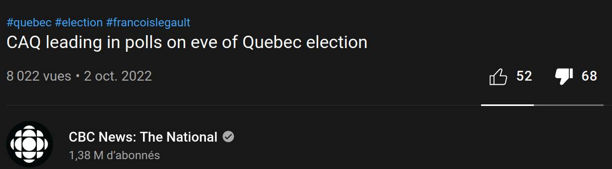

The election in Quebec are obviously rigged

2022-10-10
Not only did they try to buy votes by promising to give back some of the voter own tax dollars.
Not only did they Bribe a large (Ignorant) part of the populaces who don't realize they will
lose more than they will gain, be it money, and more.
But they (The mainstream media) really insisted that they won by a landslide, a fact which
they tried to hammer into people mind even before the election had started!
In this post I won't tell you that the 2022 election in Quebec where rigged,
I will try to show you some "weird coincidences"
Why would they have to disable the dislike if they really did won a landslide majority? (keep in mind the dislike are hidden by default on YouTube, I have an extension to still see them, and yet...).
Why would they need to disable the comment's?
(I don't think you need to do those things when the majority is truly on your side, it's almost as if they lied and cheated, but that's impossible... right?)
On YouTube you are literally forbidden to dislike some of the propaganda video about tyrant Legault and his peers, even when YouTube hide the dislike by default (exactly to facilitate this kind of deception of the masses).
He even tryed during his previous "mendate" to shut down critisism by implementing new law, that would specifically prohibit protestor and the likes from calling him a dictator/tyrant!

How improbable that this video about the CAQ leading the polls get more dislike than like, it's almost as if the real majority didn't approve? which would be quite contradictory (Yes I know this is just a small sample of the population, but isn't it the same with the polls? How funny is it that I predicted this video would have a larger dislike ratio.)
I can keep going, the dislike ratio is quite contradictory to what the title would suggest, what an ironie. they should probably have disable the dislike on all their propaganda video for good measures. you know like real "democracy" do.
Follow the logic: It's a "democratic" country, so dislike are hidden, comments sections are deactivated.


I won't go in depth into the economic of HOW those who buy your vote, will inevitably make you poorer in this article, but just as a reminder let's pretend the voting system ain't rigged,
no matter who you vote for, you'll be stuck with them for 4 years,
so if they try to bribe you by promising to give you back some of the money you pay for government services,
in an attempt to buy your vote, remember that you'll lose at the end,
because I can promise you that you'll be way more poor in a broken totalitarian society.
No amount is worth loosing all your freedoms,
no amount is worth becoming a slave.
Once they are in power they can easily take back what they "gave"
by other means and with interest.
Don't vote for money (Even less if it's your own tax payed money)
400$, 2000$ ain't worth turning where you live into an hell hole.
It ain't gonna be worth much, if the one you elect destroy the economy or
increase the tax rate. No matter the the reason,
if a politician try to bribe you to vote for them, D'ONT (It's a big red flag), you'll lose more than it's worth.
For an example, It's like if I offered you 5 dollars but in exchange for the next four years,
each day you would have to give me a random amount of money.
It ain't gonna help you, and it sure won't make you richer.
Think carefully.
Their is more example of this majority of dislike on similar videos, disabled dislike's and comment's sections, but I'll let you see for yourself.